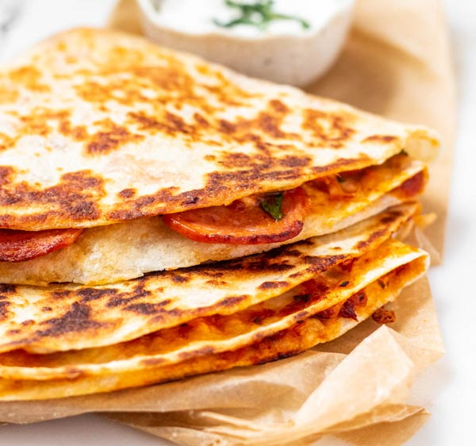

Pizza Quesadilla
This one is super fun to make! If you could eat a pizza but don’t want to order a whole one, this recipe is for you!

Image by: Jacqueline Piper
Ingredients:
- Medium-large tortilla (corn or flour, up to you! I prefer flour)
- Pepperoni
- Shredded/grated mozzarella
- Shredded/grated parmesan
- Oregano
- Salt & pepper
- Olive oil
- Optional:
- Shredded/grated provolone
- Marinara sauce
Directions:
- In a large pan, add a teaspoon of olive oil and apply to medium heat.
- Prepare your tortilla by cutting it down the middle, stopping at the center (just cut it halfway, not all the way!).
- Add the pepperonis and cook for about 1-2 minutes until they’ve absorbed enough oil and are slightly crispy.
- Take out the pepperonis and drain on a paper towel if needed.
- Place the tortilla in the pan, then flip until that one side is warm.
- Arrange your cheese and pepperoni on each quarter of the tortilla, starting with pepperoni at the cut.
- Season lightly with oregano, salt, and pepper to taste.
- Starting at the cut you made, carefully fold the tortilla into the next quarter. Continue to fold along the tortilla until you have just one, layered quarter.
- Flip the tortilla and continue to cook until each side is golden and crispy, and the cheeses are all melted.
- Prepare your marinara sauce in a small dish.
- Enjoy by dipping your pizza quesadilla into the marinara!
Table of Contents
Recipes